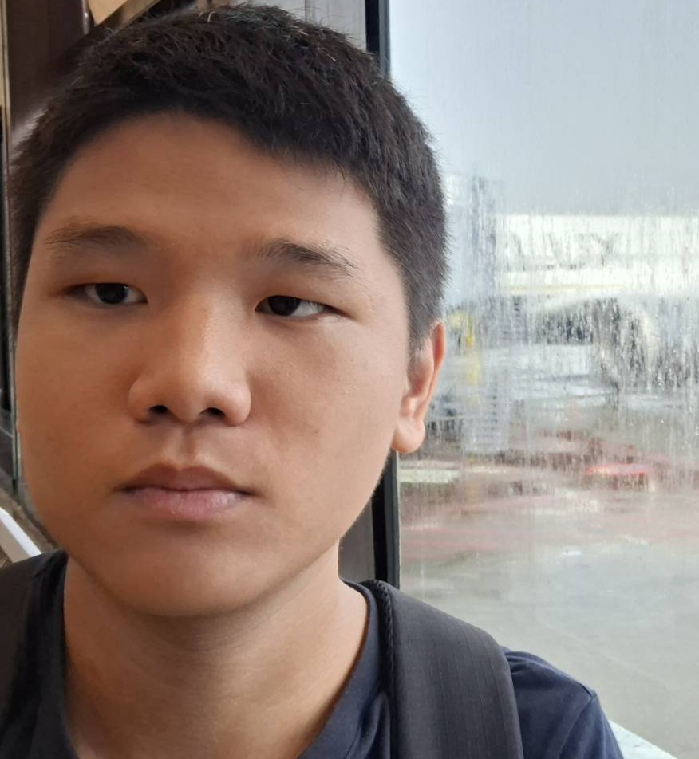

載入中...
歡迎來到
宋嵐緒的個人網站
很高興你來。我是宋嵐緒。
我是個高一學生，喜歡把腦袋裡的奇怪想法做出來。這裡是我的小角落，放著我正在做的事、正在想的問題，還有一些想跟你說的話。
你可能會覺得這裡的內容有點嚴肅，但我保證我本人沒那麼嚴肅。我只是覺得，有些事情現在不說，以後就來不及了。
我在做什麼
簡單說，我在做一個叫做凌極世界的計畫。它聽起來很宏大，但其實核心很簡單：每個人都應該有選擇的權利，而不是被迫走同一條路。
這些東西可能還很粗糙，但我想證明一件事：高中生也可以試著解決那些看起來很遠、但其實離我們很近的問題。
凌極世界
如果你也覺得現在的路走起來不太對，但不知道能怎麼辦，歡迎來看看。這不是教學，是邀請。
閱讀完整理念 →關於我這個人
除了弄這些看起來很嚴肅的東西，我也是個普通高中生。我彈吉他、游泳、打木箱鼓，偶爾畫點東西。我生日是 9 月 28 日，如果你剛好也是這天，那我們還挺有緣的。
想更認識我的話，可以看看我的個人經歷。
想說的話
很多人的人生，最後都停在「妥協」兩個字。我想試試看，讓人生可以有「選擇」。
如果你也有一直想做的事，但因為「沒人允許」所以沒動手，歡迎寫信給我。我們可以一起把它做出來。
網站還在慢慢長。謝謝你來。